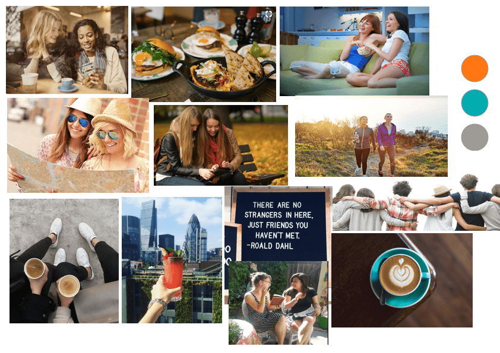

Friend City — a new way to find friends
Helping people find friends in a new city based on their preferences and interests
OVERVIEW
Tasked with creating a mobile app prototype that solves a specific user problem, I built an interactive prototype that would help my users connect with people in a new city based on their preferences and interests, and then arrange to meet.
The app combined features like profile matching, chat functionality and location-based recommendations with a warm and engaging brand personality. The 2 main focus areas of the design sprint were User Research and Visual Design.
DURATION:
2 week design sprint
MY ROLE:
- User Research, Wireframing & Prototyping, Visual Design, Usability Testing
METHODOLOGY:
- User Research
- Participatory Design
- Sketching & Wireframing
- Rapid Ideation & Wireframing
- Digital Prototyping
- Visual Design
PROJECT BRIEF
The task for the first week of my project at the General Assembly UX Design immersive was to design a rough interactive prototype of a mobile app that would address a key common problem in a class colleague’s (the user’s) life, based on user interviews.
The focus of the second week was visual design — applying fundamental visual design principles and techniques in a user-centric way.
THE CHALLENGE
My challenge was to do extensive user interviews and research with my designated user to identify a problem, and then to design the app prototype through an agile UX design process that included:
- User interviews and concept mapping
- Defining (and refining!) the Problem Statement and Solution
- Storyboards and User Flows
- Sketching wireflows
- User testing and refining sketches
- Digital Prototyping
- Visual Design
THE SOLUTION
Interactive low-fidelity prototype of the app in Marvel + High-fidelity screen mockups on Sketch
RESEARCH & DISCOVERY STAGE
USER INTERVIEWS - MEET IRENE
She’s new to London and lives with her boyfriend. She loves books (reading and writing), interesting conversations and deep connections with friends.
My goal was to identify a current problem without a solution in her life that could be the focus of my app.
We had many chats about her life and interests. Back home in Barcelona, Irene had lots of childhood friends and since she moved to London, she has found it difficult to make new friends who she can connect with. She has gone to meetups and writers’ groups hoping to meet people with common interests but being quite shy, this hasn’t quite worked out for her.
She dislikes big groups and would love to have more opportunities to connect with people on an individual basis.
"I don’t like big crowds, and small talk"
"I’d love a Tinder for Friends!"
CONCEPT MAPPING
I spoke to Irene again to delve deeper into her situation and better understand her problem. Dipping my toes into the psychology of introverts, adjusting to life in a new city and the social dynamics was fascinating.
Putting pen to paper, I built a concept map around my user interviews to help me visually organise the user insights by theme.
This highlighted the user motivations and the emotional aspects of the problem and informed what features I could potentially include in my app.
DEFINING & IDEATING
PROBLEM
Defining the problem in a simple statement, and refining this based on user feedback, helped anchor my design process.
Irene is new to London and misses having a group of friends to hang out with. She wants to meet new friends but is shy and dislikes large groups.
STORYBOARDING
A simple visual demonstration of my user’s journey through a storyboard helped capture the problem and identify a solution and the desired outcome for Irene.
SOLUTION
Friend City is a new mobile app that will connect this user to people based on her preferences and interests, and who she can then arrange to meet.
USER FLOW
Building a logical user flow helped move the process forward and start visualising the various steps in the app process.
I revised this a number of times to reflect the user decisions and keep it simple.
DEVELOPING THE SOLUTION - BUILDING PROTOTYPES
SKETCHING WIREFLOWS
I began to build initial sketches based on the user flow and this helped me visualise what features I could add and how much information I should include on a screen.
Checking in frequently with Irene was invaluable in ensuring I got early feedback and was able to take this into account for revised sketches.
This helped changes to include specific app features and navigational elements. For instance, a couple of screens were too cluttered and text-heavy and would benefit from being more visual.
DESIGN ITERATIONS - PAPER PROTOTYPES
Once I had revised sketches, I began building paper prototypes where I got to play around with user interfaces and add more detail to my sketches including navigational elements, button placements, details on matching profiles, etc.

INTERACTIVE PROTOTYPE
Constant testing throughout my design process provided me with actionable insights into the actual user experience and helped inform the app screen flow and features.
I uploaded the paper prototype images to Marvel to continue testing on a mobile screen. It ensured that the app was simple, intuitive and focused on the user outcome.
DEVELOPING THE SOLUTION - VISUAL DESIGN
With the app features and flow in place, the next challenge was to apply newly learned principles on typography, colour, shapes, iconography and forms to our screen design. This was combined with an understanding of the app’s brand philosophy and usability.
BUILDING A BRAND PERSONALITY
Building an overarching brand personality was key to all subsequent design decisions.
The user goal in the app is to connect with new friends based on interests and preferences. Through discussions with Irene as well as further research using a brand positioning framework, I honed in on the key attributes of my app’s brand personality:
- Friendly and warm — Most of us have been there right? New to a city, school or neighbourhood and looking to meet other similar-minded people. As one-to-one connections were a key attribute of the app, it had to have a friendly and warm tone.
- Intuitive — A simple and intuitive approach with the user’s goal in mind would help ensure the app’s usability.
- Urban — The app’s visual design had to reflect the user’s urban lifestyle.
BRAND AFFINITIES
To further flesh out my brand’s perception and personality, I looked at inspiration out there as reference points.
- Reese Witherspoon, Winona Ryder, Hugh Laurie — friendly, warm and great conversationalists (I think!)
- Mini Cooper — urban and convenient
MOOD BOARD
Once I had a good idea of my brand’s personality, I began developing a visual style that would communicate the brand attributes and bring out the user’s emotional experience.
I began pulling together a mood board to help me visualise the user’s feelings, moods and behaviour. It also provided inspiration for various visual components including a colour scheme.
I picked out colours from my mood board that communicated the brand’s personality and tested them out on some low-fidelity screen sketches to see how they came together.
STYLE GUIDE
As we began understanding the fundamentals of design language, I began researching style guides published by companies like Google, AirBnB and BBC.
I pulled together a style guide for the Friend City app which helped me ensure visual consistency and structure in the visual design across the screens.
Components of the style guide included typography (and fonts), colours, buttons, input fields, logo, alignment and layout.
SCREEN MOCK-UPS
Next, I digitised 3 of my initial screen prototypes and moved these from low-fidelity to mid- and finally high-fidelity.
I user tested these at every stage and iterated my designs so ensure it reflected the brand personality while being usable and readable.
FIRST ITERATION
I experimented with a few things for my first high-fidelity mockup, which included:
- A friendly upbeat image for the home screen and a simple white background for the others to ensure the profile details stood out
- Droid Sans typeface for a structured rounded look
- A “layered” look for the individual profile page with the background matches faded back
Feedback on the above was mixed:
"I love the first image! So hopeful and warm."
"The other two screens feel rather cold."
The font looks chunky
I tested a few more images for the second and third screens to mirror the warm emotion from the first. I also experimented with other typefaces and layouts and updated the style guide.
SECOND ITERATION
I switched to the Roboto Condensed typeface for my next iteration. Other changes included background image, transparency variations, button placements, etc.
The feedback on these was more favourable but the background image for the 2 latter screens was still perceived as being cold. I continued tweaking and testing both the visual impact and screen readability and layout.
FINAL MOCK-UPS
I made further changes in my next iteration:
- Changes to the login screen to reduce clutter
- A “warmer” background image for the next 2 screens with orange/red tones
- Amended buttons in the third screen with shadows to remove the slight “blurring” effect from the orange button on teal background.
I tested the final screens on a mobile phone and the user feedback was largely positive. Most people felt the design communicated the friendly, urban brand personality.
REFLECTIONS
While the project was a steep learning curve for me personally, it was an incredible learning experience, and watching my design being born and evolve was amazing.
Building my user interviewing skills and combining fundamental visual design principles with many user tests and iterations helped my design process immensely.
IF WE HAD MORE TIME....
Given more time, I would have liked to add additional features based on user feedback and testing:
- Additional auto-suggest options based on common interests (Experiences / events)
- More criteria for matching, like languages
- Personality quizzes?